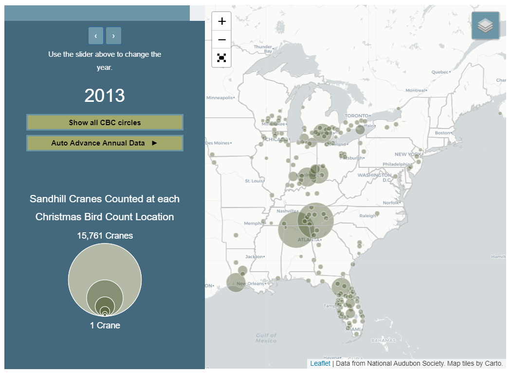

I'm currently working on a web application for the International Crane Foundation that helps users find where they can see Sandhill Cranes in the wild.
The Sandhill Crane Finder integrates data from Cornell's eBird API, National Audubon's Important Bird Areas in the United States, and the luser's location to help visitor's find where they can see these inspiring birds in the wild. The Web App is built responsive first but is currently in active development.
Tools: Mapbox GL JS, eBird Data API, PostgreSQL & PostGIS, HTML, CSS, Node JS, Python
As a final project for a class in Interactive Cartography and Geovisualization at the University of Wisconsin, I worked with a couple of classmates to create an interactive blog post for the International Crane Foundation visualizing changes in Sandhill Crane distributions over 50 years. We used a mixture of Leaflet and D3 for the project.
Tools: Leaflet, D3, PostgreSQL & PostGIS, HTML, CSS
The Whooping Crane Eastern Partnership is reintroducing Whooping Cranes toe the eastern flyway of the United States. I created this simple map wo help supporters track the cranes through the year. The map performs a database call to the research database to update the map at least once per day.
Tools: PostgreSQL & PostGIS, MapBox GL JS, Node.js
The International Crane Foundation recently completed work on new range maps for the world's fifteen species of cranes for the IUCN SSC Crane Specialist Group. I helped compile the general range information from researchers around the world to create broad scale range maps.
Tools: Avenza MAPublisher, Adobe Illustrator, ArcMap

In a cartography course, we were tasked with creating a topographic map for an imagined 1000 km bicycle race. To create them map, we combined raster elevation data and vector layers combined in Adobe Illustrator and Photoshop to create the final project.
Tools: ArcMap, Adobe Illustrator, Adobe Photoshop, Avenza MAPublisher, Avenza Geographic Imager
This is for a class project only, and not for official use.

We were asked to make a long form infographic as part of a cartography course. I created one for using Midwest Crane Count data to talk about the relationship between cranes and the landscapes where they breed.
Tools: ArcMap, Adobe Illustrator
This is for a class project only, and not for official use.